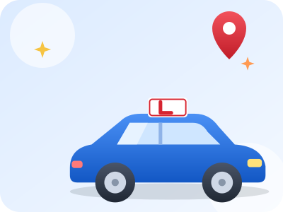
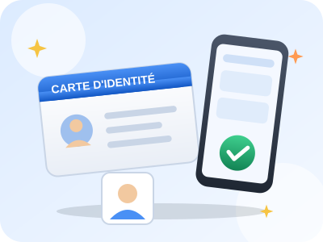
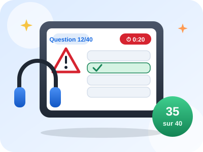
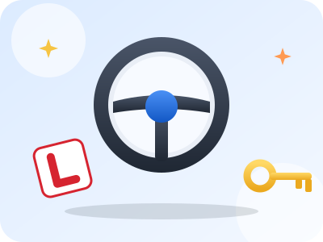
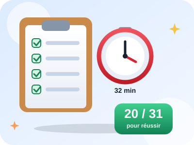
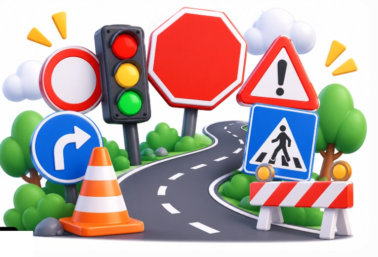
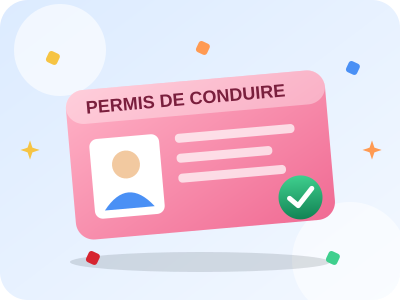
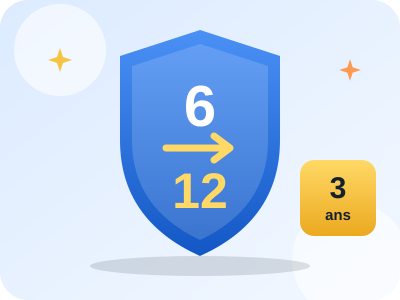
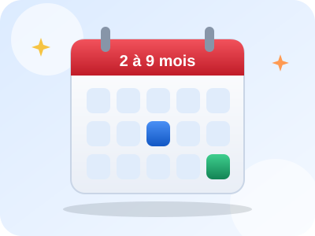

Guide complet
Passer son permis de conduire : par où commencer ?
Papiers, code, conduite, examen, prix, aides… Voici toutes les étapes du permis B en France, expliquées simplement et dans l'ordre. Plus besoin de te perdre dans les démarches.
- 🎂 Dès 15 ans (conduite accompagnée)
- 💶 Code : 30 € par passage
- 🚗 20 h de conduite minimum
- 📝 Code : 35 sur 40
- 🏁 Conduite : 20 sur 31


Choisir sa formule
Avant de te lancer, décide comment tu veux apprendre. Il y a trois grandes voies, et elles mènent toutes au même permis B.
- Formation traditionnelle : le code, puis les heures de conduite avec un moniteur. Examen pratique à partir de 18 ans.
- Conduite accompagnée (AAC) : dès 15 ans. Après la formation en auto-école (20 h minimum), tu roules au moins 1 an avec un accompagnateur (3 000 km minimum). Tu peux passer l'examen pratique dès 17 ans et conduire seul à 18 ans. La période probatoire est plus courte (2 ans) et cette formule est réputée donner de meilleurs résultats à l'examen.
- Conduite supervisée : à partir de 18 ans, tu peux continuer à t'entraîner avec un accompagnateur après ta formation, pour prendre de l'expérience avant l'examen.
Boîte automatique ? La formation est plus courte (13 h minimum au lieu de 20 h), mais ton permis sera alors limité aux voitures à boîte automatique.

Rassembler ses papiers
Tout se fait en ligne. Prépare ces documents (photos ou scans lisibles) :
- Une pièce d'identité valide : carte d'identité, passeport ou titre de séjour.
- Un justificatif de domicile de moins de 6 mois : facture d'énergie ou d'internet, avis d'imposition… Si tu es hébergé(e) : attestation d'hébergement, pièce d'identité et justificatif de domicile de la personne qui t'héberge.
- Une photo d'identité numérique (e-photo), faite en cabine agréée ou chez un photographe agréé. Elle te donne un code à saisir sur le site. Une photo découpée à la main est refusée.
- L'ASSR 2 (ou l'ASR) si tu es né(e) après le 1er janvier 1988.
- L'attestation de recensement ou de participation à la JDC (journée défense et citoyenneté) si tu es concerné(e) par ton âge.
- Cas particuliers : avis médical pour certains problèmes de santé, copie d'un ancien permis ou d'un permis étranger, etc.
Obtenir son NEPH sur le site de l'ANTS
Le NEPH (numéro d'enregistrement préfectoral harmonisé) est ton numéro de candidat. Sans lui, impossible de s'inscrire au code ni à la conduite.
- Crée un compte sur ants.gouv.fr (la connexion avec FranceConnect est possible).
- Choisis la démarche « permis de conduire », puis « première demande ».
- Remplis ton état civil et envoie tes pièces (PDF, JPG ou PNG, fichiers légers).
- Attends la validation : de quelques jours à quelques semaines selon la période.
- Tu reçois ton NEPH par e-mail : 12 chiffres, valable toute la vie. Garde-le précieusement, même si tu changes d'auto-école.
Bon à savoir : l'auto-école peut très souvent faire cette démarche avec toi, mais tu restes responsable de tes pièces.
Choisir son auto-école (ou passer en candidat libre)
| Auto-école classique | Auto-école en ligne | Candidat libre | |
|---|---|---|---|
| Principe | Cours et leçons dans une agence | Code et suivi sur internet, leçons de conduite à réserver | Tu organises tout toi-même |
| Avantages | Suivi de proximité, moniteur attitré | Prix en général plus bas, souplesse | Le moins cher |
| À savoir | Le plus cher, forfaits à comparer | Vérifie les délais pour réserver les leçons | Il faut un véhicule à double commande, une assurance adaptée et un accompagnateur ; démarches plus lourdes |
Avant de signer, vérifie :
- Le contrat écrit et le devis détaillé (ce qui est inclus, le prix de l'heure en plus).
- Le taux de réussite affiché et les avis d'anciens élèves.
- Les délais pour obtenir des leçons et une place à l'examen.
- La possibilité de payer en plusieurs fois ou avec une aide (voir plus bas).
Comme repère, un parcours complet en auto-école coûte le plus souvent entre 1 500 et 2 500 €. Les prix varient beaucoup d'une région à l'autre.

Réussir le code de la route (ETG)
C'est la première grande épreuve : l'épreuve théorique générale, qu'on appelle « le code ».
- 40 questions sur tablette, avec images ou courtes vidéos, lues par une voix.
- 20 secondes pour répondre à chaque question.
- Il faut au moins 35 bonnes réponses : 5 erreurs maximum.
- Prix : 30 € par passage, dans un centre d'examen agréé.
- Le jour J : ta pièce d'identité et ta convocation.
- Le résultat arrive rapidement (en général sous 48 h). Si tu rates, tu peux repasser, en payant de nouveau.
- Une fois réussi, le code est valable 5 ans.

Apprendre à conduire
C'est la formation pratique, avec un moniteur diplômé.
- Tout commence par une évaluation de départ (environ 1 h) qui permet de fixer le nombre d'heures utiles.
- Minimum légal : 20 heures de conduite (13 h en boîte automatique). La moyenne réelle est plus élevée : beaucoup d'élèves ont besoin de 30 à 35 heures.
- Tu suis un livret d'apprentissage et tu travailles 4 compétences : maîtriser le véhicule, appréhender la route, circuler dans des conditions normales, pratiquer une conduite autonome et économique.
- C'est l'auto-école qui juge quand tu es prêt(e) à présenter l'examen.

Passer l'examen pratique
L'examen dure environ 32 minutes, avec un inspecteur du permis de conduire à côté de toi.
- Vérifications du véhicule (extérieur et intérieur), avec une question sur la sécurité routière et une sur les premiers secours.
- Conduite en circulation d'environ 25 minutes, dont une partie de conduite autonome (suivre un itinéraire, avec ou sans GPS).
- Une manœuvre (par exemple un créneau, une marche arrière ou un stationnement en bataille).
Tu es noté(e) sur 31 points : il faut 20 points minimum, sans aucune faute éliminatoire (refus de priorité, feu rouge ou stop non respecté, mise en danger, intervention de l'inspecteur).
Le résultat est publié en ligne dans les jours qui suivent. Tu as 5 passages pendant les 5 ans de validité de ton code. Les délais pour obtenir une date varient beaucoup selon la région (de 1 à 4 mois en moyenne).


Bravo, tu as ton permis ! Et après ?
- Tu reçois un certificat provisoire qui te permet de conduire en attendant ton permis (pendant 4 mois au maximum).
- Ton permis est fabriqué puis envoyé par la poste : compte entre 2 et 4 semaines en moyenne.
- Tu entres en période probatoire. Tu commences avec 6 points, qui montent jusqu'à 12 points en 3 ans si tu ne commets aucune infraction (2 ans après une conduite accompagnée).
- Pendant cette période : alcool limité à 0,2 g/L, vitesses maximales réduites (110 km/h sur autoroute) et disque A à l'arrière du véhicule.
Tout est expliqué dans notre fiche permis à points.

Combien ça coûte, et quelles aides ?
| Poste | Prix indicatif |
|---|---|
| Examen du code | 30 € par passage |
| Évaluation de départ | 30 à 80 € |
| Frais de dossier | 0 à 150 € |
| Forfait de 20 h de conduite | 900 à 1 400 € |
| Heure de conduite en plus | 45 à 70 € |
| Accompagnement à l'examen pratique | 0 à 120 € |
| Repassage de l'examen | variable |
Les aides à connaître (conditions à vérifier sur service-public.fr) :
- Le permis à 1 € par jour : un prêt dont l'État prend en charge les intérêts, pour les jeunes, auprès de banques partenaires.
- Le CPF (compte personnel de formation), selon ta situation et le projet.
- L'aide de 500 € pour les apprentis.
- France Travail pour certains demandeurs d'emploi.
- Les aides locales : certaines régions, départements et communes proposent une bourse au permis.

Combien de temps ça prend ?
Tout dépend de ton rythme et de ta région. Voici des repères :
| Étape | Rapide | Courant |
|---|---|---|
| Le code | 2 à 4 semaines | 1 à 3 mois |
| 20 à 30 h de conduite | 1 à 2 mois | 2 à 6 mois |
| Attendre une date d'examen | 2 à 6 semaines | 1 à 4 mois |
Au total : 2 à 4 mois dans le meilleur des cas, plutôt 4 à 9 mois en général. En conduite accompagnée, compte au moins 1 an de pratique avec ton accompagnateur.
Nos conseils pour ne pas se tromper
- Garde tout : NEPH, convocations, contrat, factures. Fais une copie sur ton téléphone.
- Passe par les sites officiels : l'inscription au permis sur l'ANTS est gratuite.
- Réserve ton examen tôt : les places partent vite et les délais peuvent être longs.
- Révise un peu chaque jour plutôt que tout la veille : 15 minutes par jour battent 3 heures le dimanche.
- Refais les questions ratées : c'est ce que fait le mode « Mes erreurs » de Routis.
- Dors bien la veille et arrive en avance : le stress fait perdre plus de points que l'ignorance.
Prêt(e) à t'entraîner ?
Routis est 100 % gratuit : plus de 2 000 questions, des examens blancs aux conditions réelles (40 questions, 20 secondes chacune) et le suivi de ta progression.
Questions fréquentes
Peut-on passer le permis à 17 ans ?
Oui, en conduite accompagnée : la formation commence dès 15 ans et l'examen pratique peut se passer dès 17 ans. En formation traditionnelle, l'examen pratique se passe à partir de 18 ans.
Combien coûte le code ?
L'examen du code coûte 30 € par passage dans un centre agréé. À cela s'ajoute le coût de la préparation si tu passes par une auto-école ou une plateforme.
Peut-on passer le permis sans auto-école ?
Oui, en candidat libre. C'est moins cher mais plus lourd : il faut un véhicule à double commande, une assurance adaptée, un accompagnateur et faire soi-même les démarches.
Combien de fois peut-on passer l'examen pratique ?
Tu disposes de 5 passages pendant les 5 ans de validité de ton code. Passé ce délai ou ces 5 essais, il faut repasser le code.
Faut-il avoir le code avant de passer l'examen de conduite ?
Oui. Le code doit être réussi avant de pouvoir passer l'examen pratique.
Je rate le code ou la conduite, que se passe-t-il ?
Rien de grave : on peut repasser. Le code se repasse en payant de nouveau 30 €. Pour la conduite, demande à ton moniteur combien d'heures de plus sont utiles avant de redemander une date.
Sources et vérification : service-public.fr, ants.gouv.fr et securite-routiere.gouv.fr. Les prix et les délais sont indicatifs et varient selon les régions et les établissements. Les règles peuvent évoluer : vérifie toujours sur les sites officiels avant d'engager une démarche. Dernière mise à jour : octobre 2026.